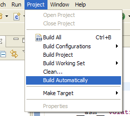

Check that the automatic build option is turned off. Otherwise the project is rebuild everytime a source file is saved which might take some time (depending on project size and processor speed).

Open the Preferences (Window -> Preferences...) and go the the General -> Workspace tab, then set the Save automatically before build option.

The project is build with Debug configuration (which is the default configuration). The log of the build process is shown in the Console View and should look something like this:
**** Build of configuration Debug for project AVRtest **** make all Building file: ../main.c Invoking: AVR Compiler avr-gcc -Wall -g2 -gstabs -O0 -fpack-struct -fshort-enums -funsigned-char -funsigned-bitfields -mmcu=atmega16 -DF_CPU=1000000UL -MMD -MP -MF"main.d" -MT"main.d" -c -o"main.o" "../main.c" Finished building: ../main.c Building target: AVRtest.elf Invoking: AVR C Linker avr-gcc -Wl,-Map,AVRtest.map -mmcu=atmega16 -o"AVRtest.elf" ./main.o Finished building target: AVRtest.elf Invoking: AVR Create Extended Listing avr-objdump -h -S AVRtest.elf >"AVRtest.lss" Finished building: AVRtest.lss Invoking: Print Size avr-size --format=avr --mcu=atmega16 AVRtest.elf AVR Memory Usage ---------------- Device: atmega16 Program: 160 bytes (1.0% Full) (.text + .data + .bootloader) Data: 0 bytes (0.0% Full) (.data + .bss + .noinit) Finished building: sizedummyNote: The format option --format=avr for the AVR Print Size tool is not available on all platforms.
The Debug folder contains all generated files:
The (virtual) folder Binaries contains a link to the generated elf file in the Debug folder. |
 |